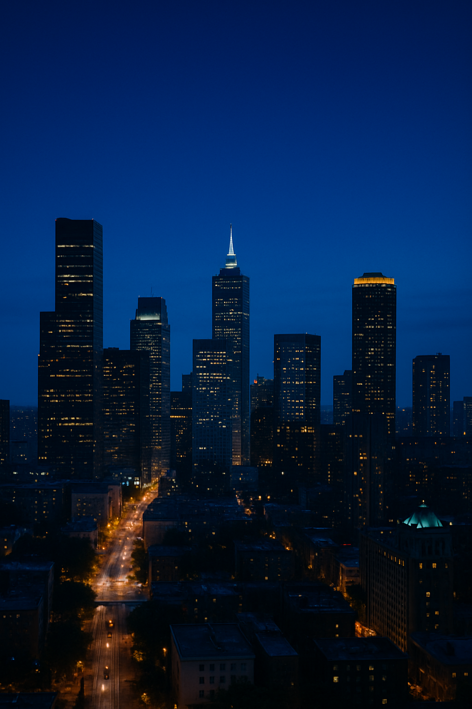
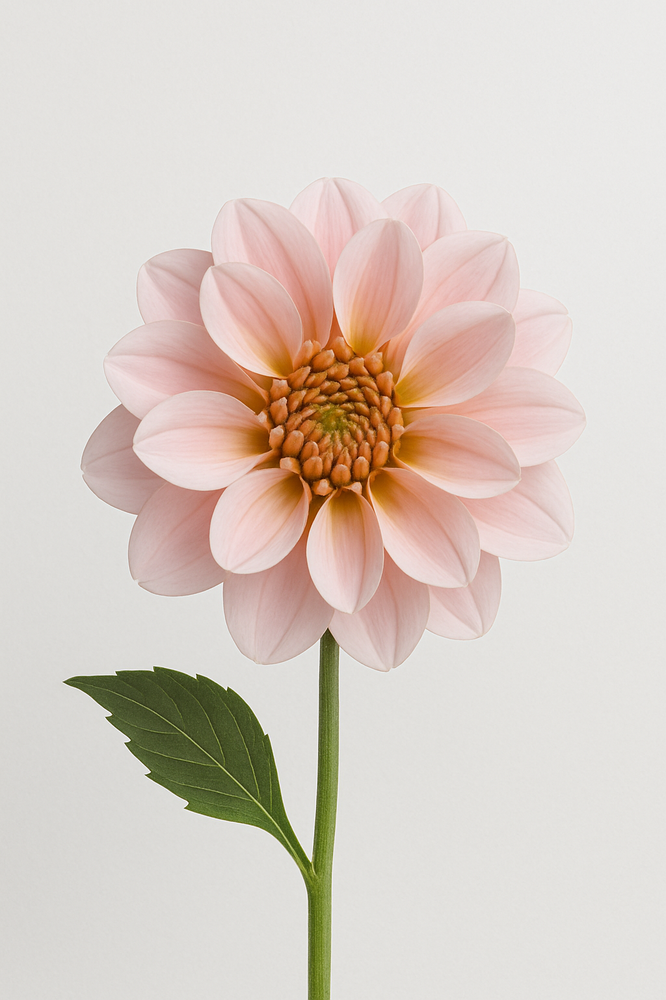
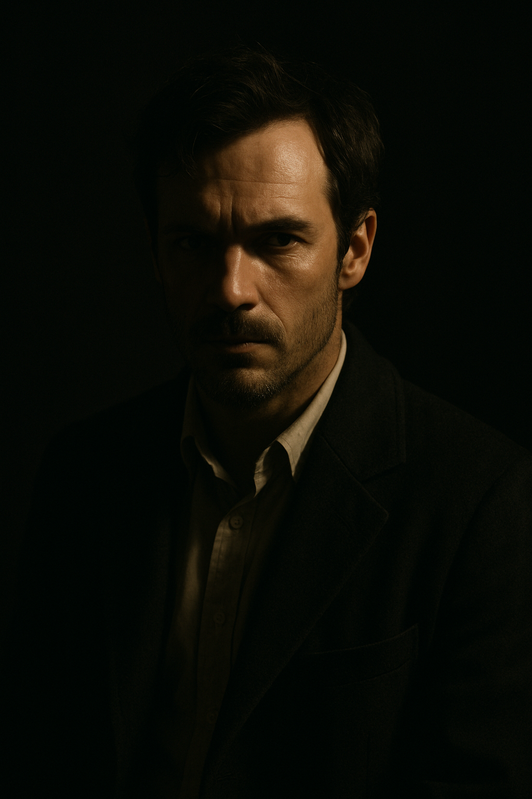
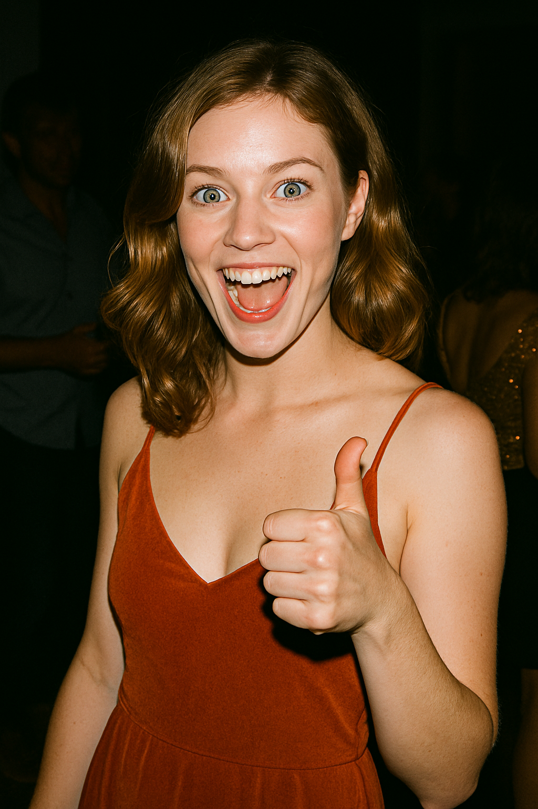

灯光类型完整视觉电子册 d1 - d10
D1
📌 原始提示词（英文）
golden hour, warm glow
📌 中文翻译
黄金时段，暖光
🎯 生成用的完整提示词（英语原文）
A young couple strolls hand-in-hand along the beach at golden hour, bathed in soft, warm sunlight just before sunset. The man, dressed casually in a beige shirt and jeans, gazes lovingly at the woman, who wears a flowing burnt orange dress as they share a serene moment, with the peaceful waves and radiant sky stretching towards the horizon behind them.
🎯 生成用的完整提示词（中文翻译）
一对年轻情侣手牵手漫步在海滩上，正值日落前的黄金时刻，沐浴在柔和温暖的阳光中。男士身穿米色衬衫和牛仔裤，深情凝视着身穿橙色长裙的女士，两人共享宁静时光，身后是延伸至地平线的平静海浪和金色天空。
D2

📌 原始提示词（英文）
blue hour, twilight, ISO12000
📌 中文翻译
蓝调时刻，黄昏，感光度12000
🎯 生成用的完整提示词（英语原文）
Captured during the blue hour after sunset, a detailed high-resolution photograph showcases a city skyline, where towering skyscrapers and brightly-lit streets are set against a gradient sky. The image, taken from above, highlights a dynamic urban scene, with streets bathed in warm light and buildings of varying heights and designs leading the eye toward a vanishing point on the horizon.
🎯 生成用的完整提示词（中文翻译）
在日落后的蓝调时刻，从高空俯瞰城市天际线，高楼大厦与灯火通明的街道交相辉映，深蓝色的天空作为背景。照片采用高感光度（ISO12000）拍摄，捕捉到城市灯光与夜色交融的冷色氛围，展现都市夜晚的活力与层次。
D3
📌 原始提示词（英文）
midday, direct lighting, overhead sunlight
📌 中文翻译
正午，直射光，头顶阳光
🎯 生成用的完整提示词（英语原文）
This stunning photograph showcases the Great Pyramid of Giza, with its sharp triangular silhouette set against a noon-day azure sky. The image highlights the carefully arranged limestone blocks, their weathered textures and warm hues contrasting the expansive sandy ground, while the pyramid's shadow adds depth and dimension to the scene.
🎯 生成用的完整提示词（中文翻译）
高分辨率照片捕捉了吉萨金字塔在正午阳光下的雄伟景象，尖锐的三角轮廓与湛蓝的天空形成鲜明对比。图像突出展示了排列整齐的石灰岩块，其风化的纹理与温暖色调在阳光照射下清晰可见，地面上的阴影增强了立体感和结构感。
D4

📌 原始提示词（英文）
overcast, whitebox, flat lighting, diffuse
📌 中文翻译
阴天，白箱光，平光，漫射光
🎯 生成用的完整提示词（英语原文）
This high-resolution close-up captures the delicate beauty of a single pink dahlia against a clean, white backdrop. The concentric petals transition from warm pinks to pale hues, surrounding a tightly spiraled cluster of golden to orange florets in the center, with a smooth green stem and a single ovate leaf adding a touch of contrast.
🎯 生成用的完整提示词（中文翻译）
这张高分辨率特写图像展示了一朵粉色大丽花，置于干净的白色背景前。花瓣由深至浅呈放射状排列，中心是金橙色的紧密花蕊，搭配一片绿色叶子和光滑花茎。柔和、均匀的光线突显了花瓣的色彩和质感，没有任何强烈阴影，营造出如同在专业白箱光环境中的效果。
D5
📌 原始提示词（英文）
dreamlike diffuse ethereal lighting
📌 中文翻译
梦幻漫射空灵光线
🎯 生成用的完整提示词（英语原文）
This image features a serene woodland scene bathed in gentle morning light, with a winding dirt trail leading through lush greenery and fading into the mist. Towering, moss-covered trees line the path and on the canopy's edge, beams of sunlight break through the fog, casting radiant rays of golden light that soften the edges of the foliage and create an atmospheric depth, inviting the viewer to explore the distant, disappearing path.
🎯 生成用的完整提示词（中文翻译）
清晨的森林小径被轻雾笼罩，阳光透过树叶和薄雾，形成柔和的光束洒向蜿蜒的小路。高大的苔藓树木排成两排，伴随柔和的绿色植被。朦胧的氛围和迷人的光影营造出梦幻而超然的森林景象，仿佛引导观者走进童话世界。
D6

📌 原始提示词（英文）
dramatic lighting, dramatic shadows, illumination
📌 中文翻译
戏剧性光线，戏剧性阴影，照明
🎯 生成用的完整提示词（英语原文）
This portrait showcases a man in his 30s or early 40s with a striking, intense gaze, illuminated from the left by a single light that casts deep shadows on the right side of his face. His rough skin texture, unkempt dark hair, and scruffy beard are highlighted by dramatic lighting that emphasizes his strong facial features, while he wears a dark overcoat and white shirt, all set against a stark black background.
🎯 生成用的完整提示词（中文翻译）
这是一位三四十岁男性的人像特写，脸上表情严肃，目光犀利。单侧光源从左侧打亮他的脸庞，右侧被深色阴影覆盖，突出粗糙的肤质和坚毅的轮廓。他身穿深色大衣和白色衬衫，背景完全黑暗，营造出紧张、神秘的戏剧氛围。
D7
📌 原始提示词（英文）
studio lighting, professional lighting, well-lit
📌 中文翻译
影棚灯光，专业灯光，光线充足
🎯 生成用的完整提示词（英语原文）
In this high-resolution portrait, a young woman with fair skin stands against a neutral beige backdrop, gazing confidently at the camera with striking blue-green eyes. Her soft makeup emphasizes her natural features—flawless skin, subtle contouring, and wavy light brown hair styled in loose waves—complemented by a fitted white shirt that enhances her poised posture and the balanced, soft lighting that highlights the contours of her face.
🎯 生成用的完整提示词（中文翻译）
这是一张高分辨率的人像照片，一位皮肤白皙的年轻女性站在中性色调的米色背景前，自信地直视镜头，拥有引人注目的蓝绿色眼睛。她的淡妆突出了自然五官——无瑕的肌肤、柔和的面部轮廓以及松散波浪造型的浅棕色头发。她身穿修身白衬衫，展现优雅姿态，均匀柔和的灯光突出了面部轮廓，使整体画面光线充足且专业。
D8

📌 原始提示词（英文）
flash photography
📌 中文翻译
闪光摄影
🎯 生成用的完整提示词（英语原文）
The photograph shows a young woman at a party, smiling broadly with her blue eyes reflecting light from the flash. Dressed in a burnt-orange spaghetti-strap dress, she offers a thumbs-up with one arm, while the soft, out-of-focus background captures fellow partygoers, lit by warm ambient lights that contrast with her vibrant appearance.
🎯 生成用的完整提示词（中文翻译）
照片展示了一位年轻女性在派对上灿烂大笑，她的蓝色眼睛反射着闪光灯的光芒。她穿着一件橙红色细肩带连衣裙，举起一只手比出大拇指，而背景中则是柔和、虚化的其他派对嘉宾，暖色环境灯光与她鲜明的形象形成对比。
D9
📌 原始提示词（英文）
low-key lighting, dimly lit
📌 中文翻译
低调光，昏暗光
🎯 生成用的完整提示词（英语原文）
In a dimly lit venue, a female singer with wavy, shoulder-length dark brown hair passionately performs, her face illuminated by subtle, dramatic lighting that highlights her strong features. Wearing a dark floral blouse, she grips a microphone close to her lips, her expression full of emotion, while the blurred background and interplay of light and shadow intensifies the intimate atmosphere of the moment.
🎯 生成用的完整提示词（中文翻译）
在昏暗的场所里，一位肩膀及肩的深棕色波浪头发的女歌手正在深情演唱，她的面部被微弱的戏剧性灯光照亮，突出她坚毅的五官。她穿着深色碎花上衣，双手握着话筒贴近嘴唇，表情充满情感，而背景虚化的光影效果更加强了这一亲密氛围。
D10

📌 原始提示词（英文）
high-key lighting, neutral, flat, even, ambient light
📌 中文翻译
高调光，中性，平光，均匀，环境光
🎯 生成用的完整提示词（英语原文）
The photograph presents a white, long-sleeved button-down shirt set against a simple, white backdrop, showcasing its sleek, lightweight fabric. With a sharp pointed collar, neat stitching, and tailored fit, the shirt features white, evenly spaced buttons and well-structured cuffs, all illuminated by soft lighting that highlights its subtle sheen and clean lines.
🎯 生成用的完整提示词（中文翻译）
这张照片展示了一件白色长袖衬衫，置于简洁的白色背景前，突出其光滑轻盈的面料。衣领尖挺，缝线工整，剪裁合身，配有均匀分布的白色纽扣和结构良好的袖口，柔和的光线勾勒出衣物的微光和干净的线条。